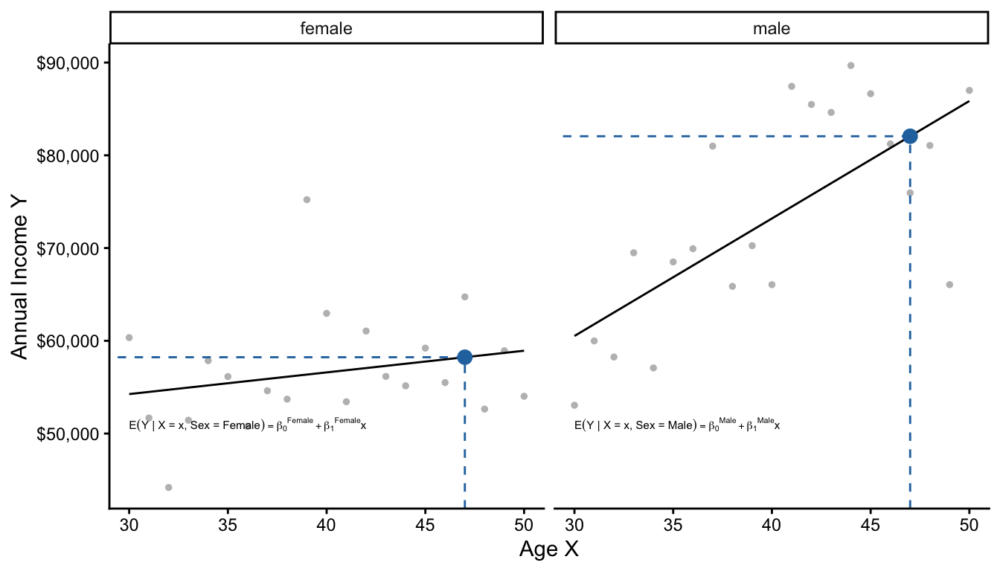
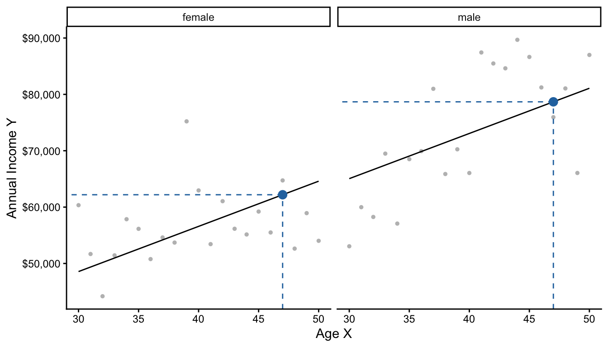
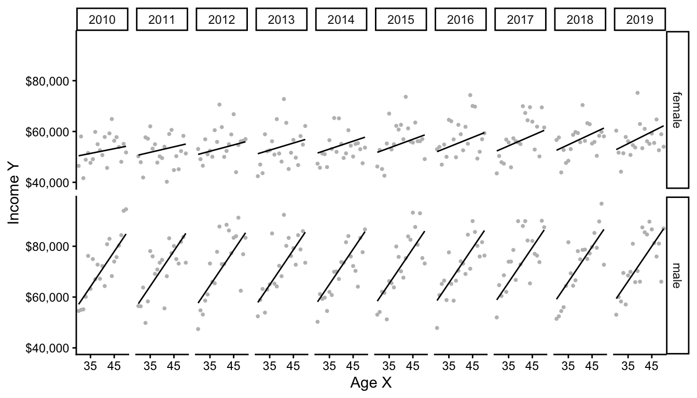
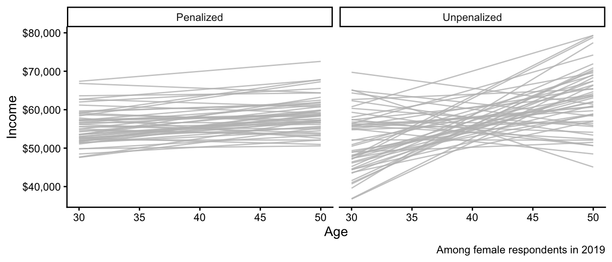
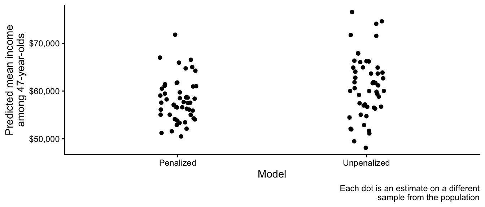

simulate <- function(n = 100) {
read_csv("https://ilundberg.github.io/description/assets/truth.csv") |>
slice_sample(n = n, weight_by = weight, replace = T) |>
mutate(income = exp(rnorm(n(), meanlog, sdlog))) |>
select(year, age, sex, income)
}Linear Regression
As an example, we will work with U.S. adult income by sex (male, female), age (30–50), and year (2010–2019). We will focus on the target population of those working 35+ hours per week for 50+ weeks per year. Data are simulated based on the 2010–2019 American Community Survey (ACS).
The function below will simulate data
Below you can see this function in action.
simulated <- simulate(n = 3e4)Rows: 420 Columns: 6
── Column specification ────────────────────────────────────────────────────────
Delimiter: ","
chr (1): sex
dbl (5): year, age, meanlog, sdlog, weight
ℹ Use `spec()` to retrieve the full column specification for this data.
ℹ Specify the column types or set `show_col_types = FALSE` to quiet this message.# A tibble: 30,000 × 4
year age sex income
<dbl> <dbl> <chr> <dbl>
1 2011 48 female 93676.
2 2012 38 female 98805.
3 2013 38 female 52330.
# ℹ 29,997 more rowsConditional expectation
A key goal with linear regression is the conditional expectation: the mean of an outcome within a population subgroup.
- expectation refers to taking a mean
- conditional refers to within a subgroup
Example: Mean income among females age 47 in 2019
Suppose we want to estimate that conditional mean in our data. One way is to first create the subgroup and take the mean among people in that subgroup in our sample.
filter() restricts our data to cases meeting requirements:
- the
sexvariable equals the valuefemale - the
agevariable equals the value47 - the
yearvariable equals the value2019
subgroup <- simulated |>
filter(sex == "female") |>
filter(age == 47) |>
filter(year == 2019)summarize() aggregates to the mean
subgroup |>
summarize(conditional_expectation = mean(income))# A tibble: 1 × 1
conditional_expectation
<dbl>
1 71530.Often, we want to study many conditional expectations: the mean outcome in many subgroups. In previous homework, we have seen how group_by and summarize can yield the mean in many subgroups.
simulated |>
group_by(sex, age, year) |>
summarize(conditional_expectation = mean(income))`summarise()` has grouped output by 'sex', 'age'. You can override using the
`.groups` argument.# A tibble: 420 × 4
# Groups: sex, age [42]
sex age year conditional_expectation
<chr> <dbl> <dbl> <dbl>
1 female 30 2010 45928.
2 female 30 2011 43688.
3 female 30 2012 42714.
# ℹ 417 more rowsIn math, the conditional expectation function is the subgroup mean of \(Y\) within a subgroup with the predictor values \(\vec{X} = \vec{x}\). We use \(\text{E}\) to denote the expectation operator. For simplicity, we will let \(f()\) refer to the conditional expectation function, which has input \(\vec{x}\) and outputs a conditional mean among those with \(\vec{X} = \vec{x}\).
\[ f(\vec{x}) = \text{E}(Y\mid\vec{X} = \vec{x}) \]
To learn \(f(\vec{x})\) from data is a central task in statistical learning.
#$ Statistical learning by pooling information
A common problem of statistical inference is that we want to study a subgroup, but there are few cases within the subgroup. For example, female respondents age 47 in 2019 in our simulated data.
simulated |>
filter(sex == "female") |>
filter(year == 2019) |>
filter(age == 47)# A tibble: 67 × 4
year age sex income
<dbl> <dbl> <chr> <dbl>
1 2019 47 female 15761.
2 2019 47 female 32995.
3 2019 47 female 83967.
# ℹ 64 more rowsFew cases in a subgroup leads to statistical uncertainty about the mean in the subgroup. How can we better estimate this conditional mean?
One strategy is to pool information using a model. We have many female respondents in 2019. The only problem is that few are age 47.
simulated |>
filter(sex == "female") |>
filter(year == 2019)# A tibble: 1,427 × 4
year age sex income
<dbl> <dbl> <chr> <dbl>
1 2019 32 female 52130.
2 2019 46 female 17465.
3 2019 41 female 66012.
# ℹ 1,424 more rowsWe might think that these other respondents (e.g., those age 46 and 48) are informative about the outcomes of 47-year-olds. There are many ways to pool information. A linear regression model is one strategy that pools information across people of all ages, to estimate a conditional mean at any particular age.

The model assumes that all of the conditional means fall along a line. Then, it estimates the intercept \(\beta_0\) and slope \(\beta_1\) of this line to best fit those conditional means. Finally, one can use the model to make a prediction at any particular \(X\) value.
Practice question
\[ \text{E}(Y\mid X) = \beta_0 + \beta_1 X \]
Suppose \(\beta_0 = 5\) and \(\beta_1 = 3\)
- What is the conditional mean when \(X = 0\)?
- What is the conditional mean when \(X = 1\)?
- What is the conditional mean when \(X = 2\)?
- How much does the conditional mean change for each unit increase in \(X\)?
Coding a linear model
Coding a linear model in R is easy. First, generate some data (get the simulate() function from futher up this page).
simulated <- simulate(n = 3e4)Rows: 420 Columns: 6
── Column specification ────────────────────────────────────────────────────────
Delimiter: ","
chr (1): sex
dbl (5): year, age, meanlog, sdlog, weight
ℹ Use `spec()` to retrieve the full column specification for this data.
ℹ Specify the column types or set `show_col_types = FALSE` to quiet this message.For our example, restrict to female respondents in 2019.
female_2019 <- simulated |>
filter(sex == "female") |>
filter(year == 2019)Then learn a model from the data with the lm() function.
model <- lm(
formula = income ~ age,
data = female_2019
)Here is how that code worked:
modelis an object of classlmfor linear modellm()function creates this objectformulaargument is a model formulaoutcome ~ predictoris the syntax
datais a dataset containingoutcomeandpredictor
We can look at the learned model with the summary() function.
summary(model)
Call:
lm(formula = income ~ age, data = female_2019)
Residuals:
Min 1Q Median 3Q Max
-52689 -29518 -12682 16013 400507
Coefficients:
Estimate Std. Error t value Pr(>|t|)
(Intercept) 47242.6 7518.3 6.284 4.37e-10 ***
age 233.7 185.7 1.259 0.208
---
Signif. codes: 0 '***' 0.001 '**' 0.01 '*' 0.05 '.' 0.1 ' ' 1
Residual standard error: 43360 on 1437 degrees of freedom
Multiple R-squared: 0.001102, Adjusted R-squared: 0.0004064
F-statistic: 1.585 on 1 and 1437 DF, p-value: 0.2083Finally, we might predict at a new X value. First, define the data at which to make the prediction: a person age 47.
to_predict <- tibble(age = 47)Predict for that subgroup
predict(model, newdata = to_predict) 1
58228.57 To review, our model pooled information:
- People of all ages contributed to
model - Then we predicted at a single age
Practice question
Below is the line fit to the population data. Suppose we want to learn \(\text{E}(\log(Y)\mid X = 30)\).
Rows: 420 Columns: 6
── Column specification ────────────────────────────────────────────────────────
Delimiter: ","
chr (1): sex
dbl (5): year, age, meanlog, sdlog, weight
ℹ Use `spec()` to retrieve the full column specification for this data.
ℹ Specify the column types or set `show_col_types = FALSE` to quiet this message.
`geom_smooth()` using formula = 'y ~ x'
- Why might this model make a misleading estimate?
- Why might the model still be useful?
Additive vs interactive models
Below, we visualize two models: one for male and one for female respondents.

There are two equivalent ways to describe these two models. The first is by thinking of them as separate linear regressions.
\[ \begin{aligned} \text{E}(Y\mid X, \text{Female}) &= \beta_0^\text{Female} + \beta_1^\text{Female}\times \text{Age} \\ \text{E}(Y\mid X, \text{Male}) &= \beta_0^\text{Male} + \beta_1^\text{Male}\times \text{Age} \\ \end{aligned} \]
The second way is to think of them as one pooled linear regression that interacts age and sex to allow the slope on age to differ by sex.
\[\text{E}(Y \mid X, \text{Sex}) = \gamma_0 + \gamma_1(\text{Female}) + \gamma_2(\text{Age}) + \gamma_3 (\text{Age} \times \text{Female})\]
Note that both approaches summarize the conditional mean function with 4 parameters. The two approaches are actually equivalent, as you can show with some algebra.
\[\begin{aligned} \gamma_0 &= \beta_0^\text{Male} &\gamma_1 &= \beta_0^\text{Female} - \beta_0^\text{Male} \\ \gamma_2 &= \beta_1^\text{Male} &\gamma_3 &= \beta_1^\text{Female} - \beta_1^\text{Male} \end{aligned}\]
Below, we practice writing an interaction in code. First generate data in 2019 that vary in both sex and age.
all_2019 <- simulated |>
filter(year == 2019)# A tibble: 3,204 × 4
year age sex income
<dbl> <dbl> <chr> <dbl>
1 2019 41 male 50285.
2 2019 45 male 31057.
3 2019 34 male 66166.
# ℹ 3,201 more rowsThe * operator allows slopes to differ across groups
model <- lm(
formula = income ~ sex * age,
data = all_2019
)
Two models: Additive model in R
The + operator assumes slopes are the same across groups
model <- lm(
formula = income ~ sex + age,
data = all_2019
)
When you have many interactions, the model starts to have lots of terms! This can make interpretation hard. But, you can always use the model to predict any conditional mean you want, even if there are many interactions.
model <- lm(
formula = income ~ sex * age * year,
data = simulated
)summary(model)
Call:
lm(formula = income ~ sex * age * year, data = simulated)
Residuals:
Min 1Q Median 3Q Max
-81158 -33849 -14946 15839 972817
Coefficients:
Estimate Std. Error t value Pr(>|t|)
(Intercept) 1.387e+06 2.343e+06 0.592 0.554
sexmale -1.943e+06 3.117e+06 -0.623 0.533
age -6.273e+04 5.760e+04 -1.089 0.276
year -6.680e+02 1.163e+03 -0.574 0.566
sexmale:age 6.646e+04 7.675e+04 0.866 0.386
sexmale:year 9.519e+02 1.547e+03 0.615 0.538
age:year 3.130e+01 2.859e+01 1.095 0.274
sexmale:age:year -3.247e+01 3.809e+01 -0.852 0.394
Residual standard error: 57790 on 29992 degrees of freedom
Multiple R-squared: 0.03332, Adjusted R-squared: 0.03309
F-statistic: 147.7 on 7 and 29992 DF, p-value: < 2.2e-16The many terms of the model correspond to many slopes in subgroups, as visualized below.

Penalized Regression
We close with a more advanced data science topic: penalized regression. We will discuss a method known as ridge regression or L2 penalized regression. This data science approach is a linear model just like OLS, but estimates the coefficients slightly differently.
Before defining this type of penalized regression, below we show what happens when we use it. Each line is a regression estimated on a different sample from the population. What similarities and differences do you notice between the penalized and unpenalized regressions?

We could use each approach to predict the mean income among 47-year-olds. Below are those predictions, with one dot from each simulated sample. How do the patterns below align with what you noticed in the graph above?

The reason one uses penalized regression is to reduce the sampling variance of estimates, at the cost of some bias (estimates are generally drawn in toward the overall sample mean). To understand how, it is useful to see some math.
OLS chose \(\alpha, \vec\beta\) to minimize this function: \[ \begin{aligned} \underbrace{\sum_i\left(Y_i - \hat{Y}_i\right)^2}_\text{Sum of Squared Error} \end{aligned} \] where \(\hat{Y}_i = \hat\alpha + \sum_j X_j \hat\beta_j\)
Penalized (ridge) regression chose \(\alpha, \vec\beta\) to minimize this function: \[ \begin{aligned} \underbrace{\sum_i\left(Y_i - \hat{Y}_i\right)^2}_\text{Sum of Squared Error} + \underbrace{\lambda \sum_{j} \beta_j^2}_\text{Penalty Term} \end{aligned} \] where \(\hat{Y}_i = \hat\alpha + \sum_j X_j \hat\beta_j\)
The only difference between the two is that penalized regression seeks to avoid having a large value of \(\sum_j \beta_j^2\). Thus, it prefers to estimate models with coefficients near zero. In practice, researchers often mean-center covariates and outcomes for penalized regression so that this pulls all estimates toward the overall mean.
Penalized regression in code
Penalized regression is available through many R packages. Here we illustrate with the glmnet package. First, simulate a large sample.
simulated <- simulate(n = 1e5)Load the package.
library(glmnet)Create a model matrix of predictors
- This converts the predictor data into matrix form
- Each column will correspond to a coefficient
X <- model.matrix(~ age * sex * year, data = simulated)Create a vector of the outcomes
y <- simulated |> pull(income)Use the cv.glmnet function to call the package. For now, we will leave as a black box how it chooses the penalty parameter \(\lambda\).
penalized <- cv.glmnet(
x = X, # model matrix we created
y = y, # outcome vector we created
alpha = 0 # penalize sum of beta ^ 2
)Finally, make predictions from the model at each observed data point.
yhat <- predict(
penalized,
newx = X
)summary(yhat) lambda.1se
Min. :60582
1st Qu.:62568
Median :65476
Mean :65063
3rd Qu.:67425
Max. :69405 When should you use penalized regression? The key reasons are motivated by the original illustration figures above. You should use penalized regression to reduce the variance of your estimates. This may occur in settings where you have many predictors and few observations, for example. However, there is a cost: penalized regression generally yields biased estimates of conditional means, so the model will be wrong on average.
In future classes, we will discuss data-driven ways to choose among the many statistical and machine-learning approaches to estimate conditional mean functions.